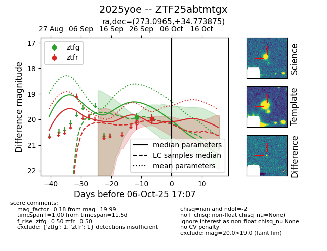
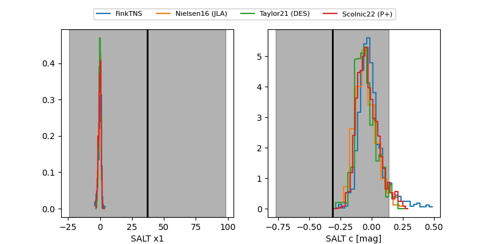

FINK: ZTF25abtmtgx
Lasair: ZTF25abtmtgx
ALeRCE: ZTF25abtmtgx
TNS: 2025yoe
YSE: 2025yoe
ZTF25abtmtgx (ztf,fink)
2025yoe (tns,yse)
equatorial (ra, dec) = (273.0965,+34.77387)
galactic (l, b) = (61.6801,+22.58359)


last ztfg=19.93, ztfr=19.99
1 ztfg, 1 ztfr detections